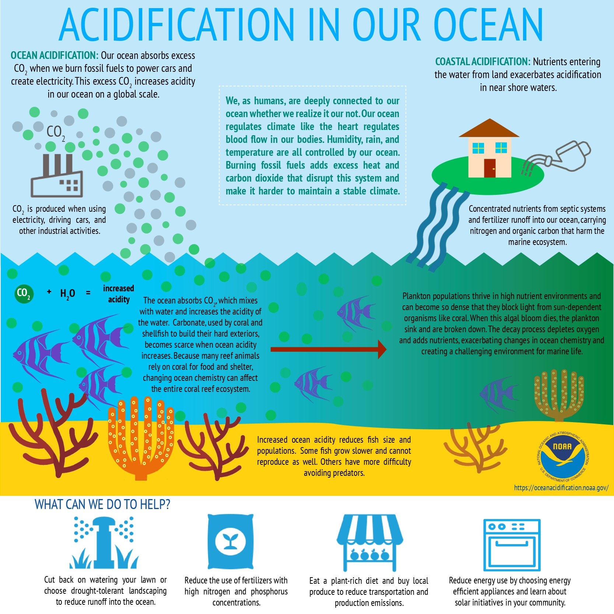
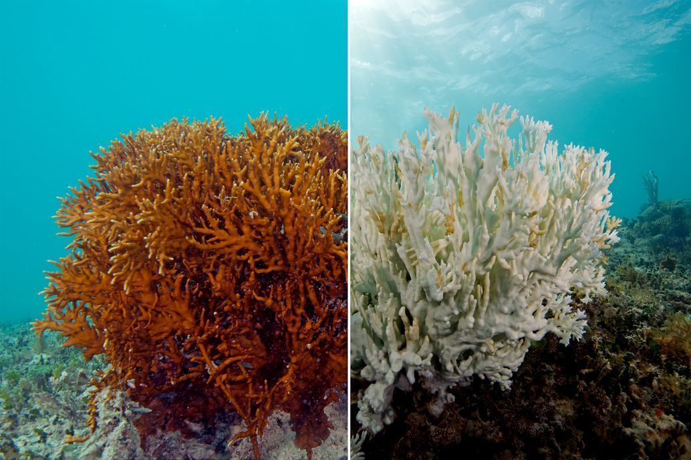
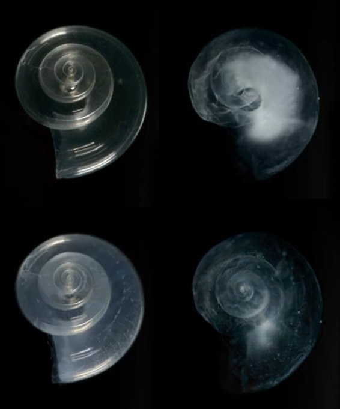
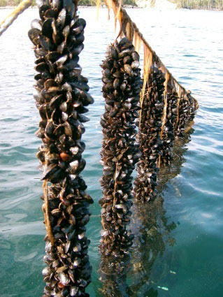

What is Ocean Acidification?

Ocean acidification refers to a reduction in ocean pH over an extended period, caused primarily by the ocean's uptake of carbon dioxide (CO2) from the atmosphere. The ocean functions as a carbon sink for anthropogenic CO2, absorbing roughly a quarter of total human-caused emissions.
- Atmospheric CO2 dissolves in seawater.
- The dissolved CO2 reacts with the water to produce carbonic acid (H2CO3), which is a weak acid.
- The carbonic acid then dissociates into a bicarbonate ion (HCO3-) and a hydrogen ion (H+).
The presence of these free hydrogen ions (H+) increases the water's acidity and thus lowers the pH. This shift disrupts the balance of carbonate ions, which are crucial for organisms like corals, shellfish, and plankton to build their skeletons and shells. It is important to note that while the oceans are becoming more acidic, seawater remains alkaline, with a pH higher than 8. Between 1950 and 2020, the average pH of the ocean surface is estimated to have decreased from approximately 8.15 to 8.05. Since the pH scale is logarithmic, a change of 0.1 represents a 26% increase in hydrogen ion concentration in the world's oceans. The current elevated levels and rapid growth rates of CO2 are unprecedented in the past 55 million years of the geological record, and the current rate of pH change is unprecedented for at least the past 26,000 years.
Why Does it Matter?

Ocean acidification, often referred to as the "evil twin of global warming" or "the other CO2 problem," has a range of potentially harmful effects on marine life and ecosystems.
One of the most significant consequences relates to calcification, the process by which many marine organisms build shells and skeletons out of calcium carbonate. When CO2 enters the water, the resulting increase in hydrogen ions leads to a reduction in the ocean's concentration of carbonate ions, which are an essential building block for calcifying organisms. This makes it harder for marine calcifiers to build or maintain their structures, leading to reduced calcification.
Biological Effects

- Corals: Acidification primarily reduces the coral's capacity to build dense exoskeletons, potentially decreasing their density by over 20% by the end of the century. Corals are also vulnerable to dissolution under undersaturated conditions.
- Mollusks and Shellfish: These include species like oysters, clams, and scallops. The Pacific oyster population, for example, has experienced crises due to young oysters being unable to secrete shells quickly enough.
- Pteropods: These tiny marine snails, which are a key prey item for organisms such as juvenile Pacific salmon, grow thinner shells that may malform or dissolve with increasing acidification. Pteropods and brittle stars form the base of Arctic food webs.
- Calcareous Plankton: Organisms such as coccolithophores and foraminifera are affected, which has implications for the ocean's biologically driven sequestration of carbon (the "biological pump").
- Metabolic and Immune Effects: Lowered immune responses have been observed in blue mussels, and reduced metabolic rates were seen in jumbo squid.
- Behavioral Impacts: For certain fish larvae, such as orange clownfish, increased acidity decreases their ability to detect predators due to effects on their olfactory systems.
- Compounded Stressors: Ocean acidification works concurrently with increased ocean temperatures and oxygen loss, forming a "deadly trio" of pressures that have compounded effects on marine life, often exceeding the individual harm of any single stressor.
Socioeconomic Impacts

- About one billion people are wholly or partially dependent on the fishing, tourism, and coastal management services provided by coral reefs.
- Billions in tourism revenue worldwide come from diving, snorkeling, and other recreational activities related to coral reefs.
- The threat includes a decline in commercial fisheries. For example, 73% of the value of US commercial fisheries in 2007 was derived from calcifiers and their direct predators . In the United Kingdom, significant economic losses (estimated at £23 to £88 million) are predicted for the shellfish industry by 2100 due to decreased shellfish growth.
- Coral reefs are highly effective, natural sea walls. They can absorb and dissipate up to 97% of the wave enery from storms and tsunamis. Coastal communities will become more vulnerable to flooding and erosion.